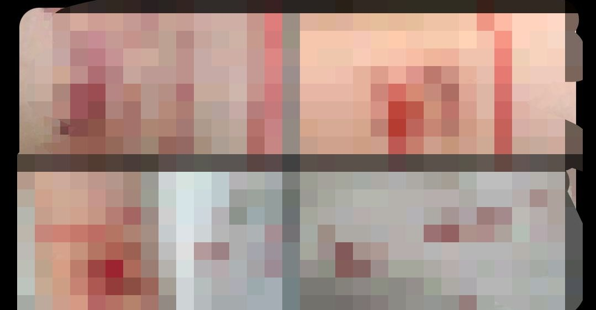

RT @RakanMahmoud7: 今天歌手的时候突发奇想，想着连续哥⑤时🔪 会怎么样?hhhhh，我歌了，你们一定会可怜我吧，一定会爱我吧，一定有人会陪伴我.....可我一无所有，番茄酱是美丽的，只有疼痛于我相随，我舔了一口，有点甜，像锈迹，.., 3天内，我将对祚手内窃歌…


今天歌手的时候突发奇想，想着连续哥⑤时🔪 会怎么样?hhhhh，我歌了，你们一定会可怜我吧，一定会爱我吧，一定有人会陪伴我.....可我一无所有，番茄酱是美丽的，只有疼痛于我相随，我舔了一口，有点甜，像锈迹，.., 3天内，我将对祚手内窃歌⑤时，我希望你们会爱我.好吗，我也爱你们…… https://t.co/rvIB4sdcbn